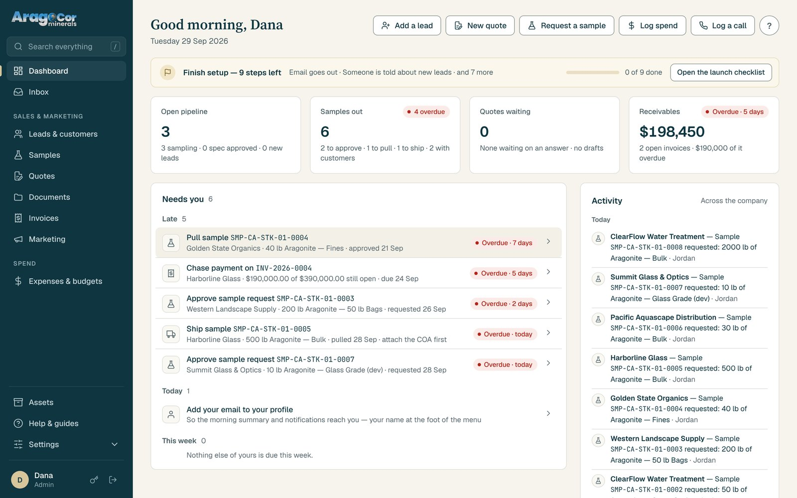
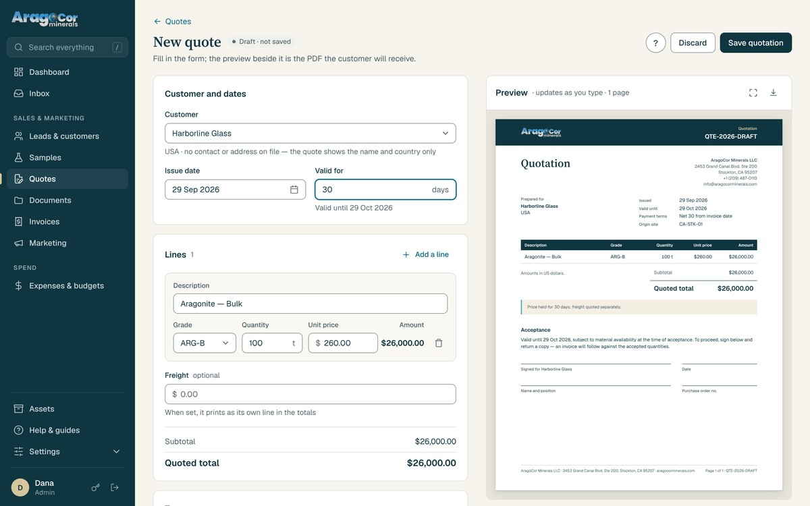
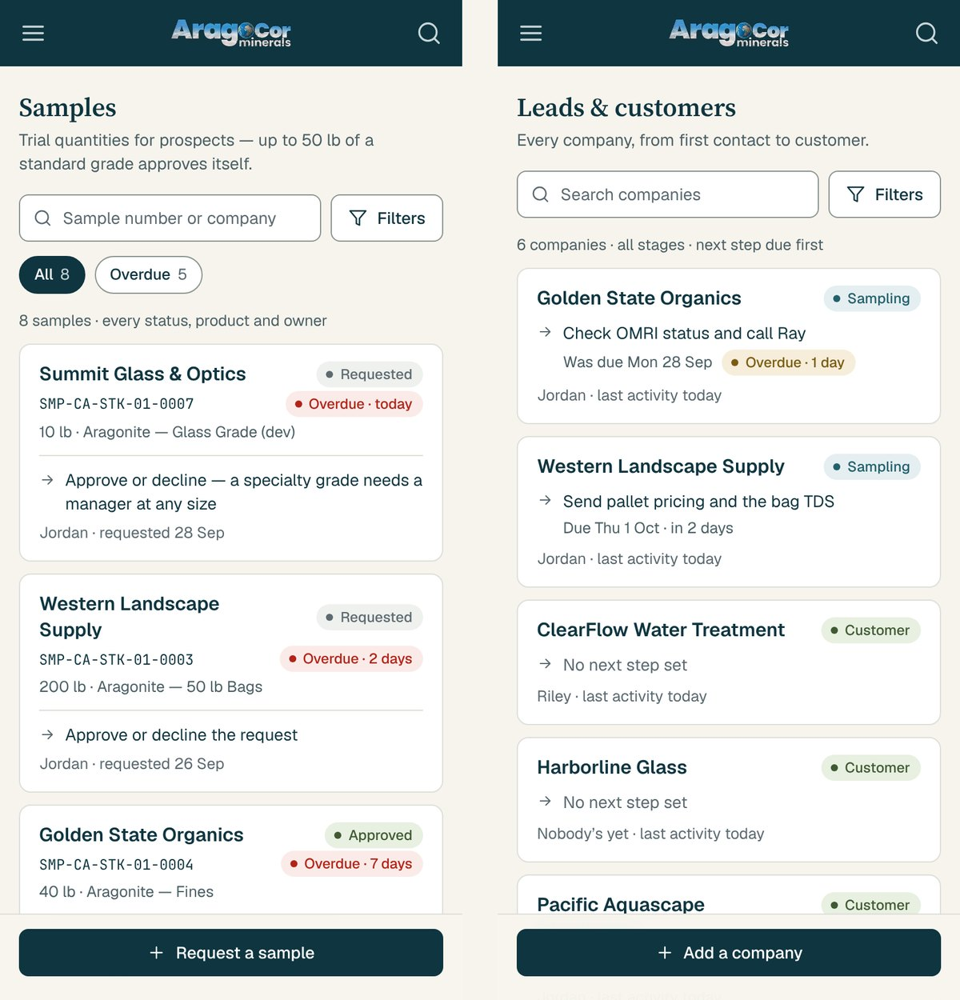

AragoCor Minerals — internal system
One internal system for a six-person minerals supplier: leads, samples, quotes, invoices, documents, marketing and spend, with the company's approval policy written into the code rather than a PDF. Built end to end, run on Cloudflare for $5 a month.
In short
- The problem. The business ran on spreadsheets, inboxes and memory. Samples weren't going out because no process owned them, and an approval policy existed on paper that nothing enforced.
- What I built. A web application the whole team signs into, with each lifecycle's rules enforced on the server, branded PDFs generated from the record, and every enquiry from the website landing in it on its own.
- What it means for you. A small company's own process, written into a system that fits it, costs less to run than a single seat of most off-the-shelf software.
- Client
- AragoCor Minerals, supplier of Bahamian oolitic aragonite, Stockton, California
- Sector
- Industrial minerals, business-to-business
- Scope
- Process design, data model, the React client, the Cloudflare Worker API, the document templates, deployment and verification, the launch audit
- Year
- 2026
- Status
- In daily use by the team; the formal launch is 15 October 2026, with a code freeze until then. Figures below read from the repository on 13 October 2026, at its commit of 8 October. The system holds the company's own records, so it is not open to visit.

At a glance
- for the whole hosting bill — Cloudflare's Workers plan, no servers, no per-seat licence
- $5 a month
- automated tests on the API, plus a smoke test that walks the samples lifecycle through the real code
- 263 tests
- pull requests in the launch run, each deploying itself on merge and verifying the live commit
- 29 deploys
- the Expense Authorization & Approval Policy, translated into rules the software applies
- 1 policy in code
The situation
AragoCor sells one mineral into several industries, and the website built for that was starting to send in enquiries. Behind it was a six-person company: executives, a site lead, finance, marketing. The work behind a single order is not small. A prospect asks for a sample; someone has to approve it, pull it from a lot, attach the certificate of analysis, ship it, follow up and close it with an outcome. A quote has to become an invoice without the numbers drifting. Spend has to be authorised by the right person at the right threshold.
All of this was happening in spreadsheets, inboxes and people's heads. Samples were not going out, because no process owned them. Quotes and invoices were built by hand. The company had a written Expense Authorization & Approval Policy, and nothing enforced it, so "who can sign off on this, and when does it escalate?" was re-answered every week. The executives wanted a view of the company; the staff wanted to stop re-typing things.
Off-the-shelf CRM and ERP software was either built for a company fifty times this size or did not fit how a minerals supplier actually works: lots, grades, certificates, tonnage.
Constraints
Six people, so nothing could depend on a full-time administrator. The rules had to be the company's own rules, not a vendor's idea of a sales process, and they had to hold when nobody was checking. The whole thing had to run for close to nothing, because the budget it would otherwise come out of was the marketing budget. And it had to be safe to change in production, because it would be changed often: the system went live to the team while it was still being built.
What I built
A system of record, one module per job. Leads & customers, Samples, Quotes, Documents, Invoices and Marketing under one heading; Expenses & budgets under another; Assets, help and settings at the foot. The dashboard opens on Needs you: what is waiting on whoever is signed in, late items first, each line linking to exactly those items. Below it, the company at a glance. A tile turns red only for a late item of the viewer's own, so red means late and yours.
Every website enquiry arrives by itself. The quote and sample requests on aragocorminerals.com land here with first-touch attribution and the grade already filled in. The form never overwrites an existing record. An enquiry nobody has answered reminds its owner after one business day and the managers after two.
Samples with a lifecycle, and the rules on the server. Request, approve, pull, ship, follow up, close. Up to 50 lb of a standard grade approves itself; a specialty grade needs a manager at any size; staff cannot approve, and nobody can approve their own request. A pull records the lot and values the material at list price for the QuickBooks export. A shipment needs the certificate attached first. Every late sample, whoever it is waiting on, is on one Overdue list.

Quotes that become invoices, to the cent. An invoice raised from a quote carries its freight, the due date from the terms and the customer's reference. One quote, one invoice; void them together; no hard delete; numbers never reused. Money is kept to the cent and every invoice was re-rated to prove it. An invoice cannot be issued until the company's bank details are on file.
The approval policy, as code. The Expense Authorization & Approval Policy v1.0, the one on paper, became three roles, thresholds and an escalation path the system applies, with a vote log. Spend over an editable review figure, and Google Ads spend past what was budgeted, notify the people who asked to hear.
Nothing waits in silence. A new lead, a sample request left a day, a quote sent, accepted or unanswered for a week, an invoice past due, a domain about to lapse: an email goes out, and every notification is logged with who it went to and whether it was sent.
The vault, and the company's other things. Contracts, certificates and presentations go to versioned storage with who uploaded what and when. The company's eight domains, with registrar, expiry and what each one does. Every data sheet, brochure, photo and video the website uses, copied in nightly. A deleted-records page that keeps a copy of anything an admin removes.

How it's built
React on the front end, served as static files. A Cloudflare Worker, written with Hono, for the API; D1 for the records and R2 for the files, so nothing binary goes in the database. Seventy-five tables, fifteen migrations, and migrations only ever add. Production changes go one way: merge a pull request on main, and a GitHub Action applies the migrations, deploys the Worker, then verifies that the live health check names the new commit. Every night the whole database is copied to R2, kept thirty days and the first of each month for a year, with a second copy outside Cloudflare.
Decisions and tradeoffs
Policy as code, not as a reminder. Encoding the approval policy took longer than writing it down would have. It also means the policy is followed on a Friday afternoon when nobody is checking, and the vote log says who approved what.
Rules on the server, not in the interface. A hidden button can be worked around; a status change the API refuses cannot. Every lifecycle rule in Samples, Quotes and Invoices is enforced where the data lives, and the tests prove it from the outside: a staff account trying to approve gets a 403, a self-approval a 409, a rejection without a reason a 400.
Switch off, don't delete. The operations modules built first — stock and movements, production, shipments, equipment, the payment schedule — are switched off rather than removed. They still answer at their old addresses with their data intact, and one line brings any of them back. The system is the sales and marketing hub now, and the menu says so.
Nothing is deleted. Business rows are never dropped by a migration. An admin can remove a sample, order, invoice, quote or document whatever its status, and a copy of everything goes to a deleted-records page. Numbers are never reused.
Audit before launch, not after. Before the launch freeze the whole system was audited: 107 screens captured at desktop and phone widths, four parallel reviews (security and access, data integrity, engineering, front end) and an independent pass that re-checked every serious finding against the code. Seventy-two findings, each fixed in its own pull request or scheduled. The sign-in hardening, the invoice re-rating and the nightly backups all came out of it.
The part that stays with the client. Samples shipped, quotes won and receivables are the company's figures and are not published here. What can be counted from the repository is below.
Result
Counted from the repository on 13 October 2026, at its commit of 8 October.
- Modules in use
- Leads & customers, Samples, Quotes, Documents, Invoices, Marketing, Expenses & budgets, Assets, Inbox, Notify
- Roles
- 3 — admin, manager, staff — with the approval policy's thresholds and escalation
- Database
- 75 tables, 15 migrations, none of which removes anything
- Tests
- 263 on the API, and a smoke test that walks the samples lifecycle through the real Worker
- Launch run
- 29 pull requests, 29 self-verifying deploys
- Launch audit
- 107 screens, 72 findings, each fixed or scheduled
- Hosting
- $5 a month
- Backups
- Nightly, 30 days kept, the first of each month for a year, plus a copy off Cloudflare
- Website enquiries
- Every one lands in the system on its own
Where it stands
The team uses it every day, and the formal launch is set for 15 October 2026, alongside the company's first paid-search campaign, with a code freeze until then. The work queued for after launch — more of the setup checklist, the QuickBooks export in daily use, the imports the team asked for — is written down in the repository, in the same file that records every change so far.
What this means for your project
Most small businesses are not shipping aragonite. The shape underneath is common: a process that lives in spreadsheets and inboxes, a policy nobody can enforce, and software built for a company fifty times your size.
- Your own process, as the system. The rules you already have — who approves what, what has to be attached before something ships — written into software that applies them, instead of a tool that asks you to adopt its process.
- Rules where the data lives. A rule in the interface is a suggestion. A rule on the server holds when nobody is watching.
- Almost nothing to run. No servers, no per-seat licence, backups that happen by themselves. $5 a month is the whole bill here.